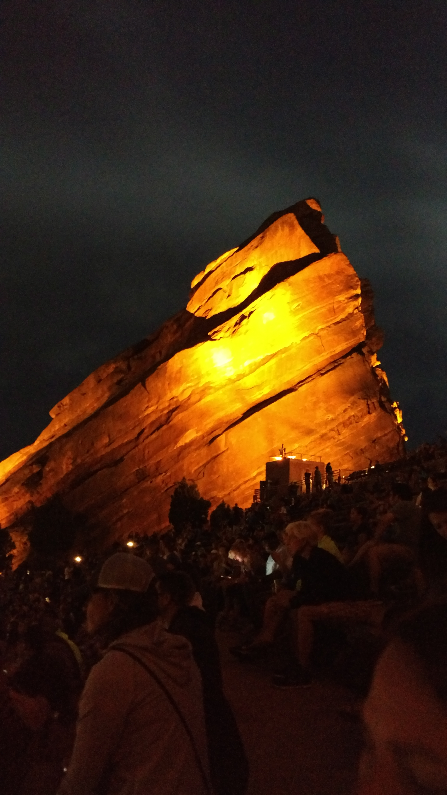

Red Rocks is an ampitheater in Morrison, Co and is known for its natural rock formations that help create amazing acoustics for artists and musicians. Started in 1941, it has grown to be one of the most visited sites in Colorado and music venues throughout the United States. From The Beatles to James Taylor to modern musicians, such as Dave Matthews Band, and The Lumineers have performed and have been known to put on some of their best shows here. I have been lucky to experience two different shows here, and can honestly say it truly has been some of the best experiences I've ever had so far.